Senhores, a Inteligência confirmou nossos piores temores. O inimigo ativou um complexo logístico focado na
extração e transporte de minérios essenciais para a fabricação em massa de drones autônomos. A cadeia
logística de "Cold Ore" já está operando a todo vapor em um dos cumes mais hostis de Auroa.
Vocês serão inseridos na face congelada da cordilheira, à sombra de uma gigantesca ponte metálica. O frio
cortante será o menor de seus problemas: bloqueios de sinal pesados naquela altitude inutilizaram todo o
suporte de drones e mapeamento aéreo da equipe no momento da queda.
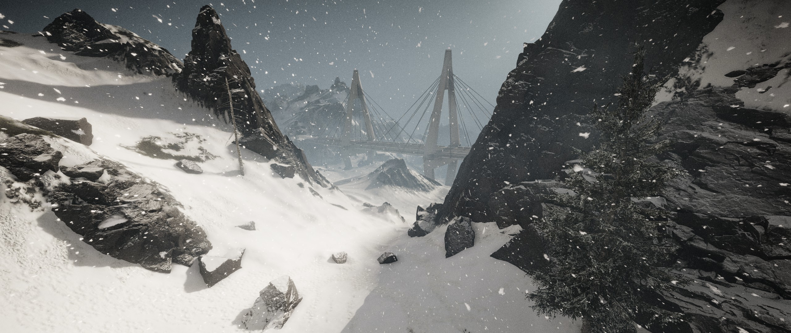
Ponto de InserçãoEstrutura colossal bloqueando a rota norte.
Se quiserem "olhos no céu" durante a incursão, terão que invadir a zona de testes montanhosa por conta
própria e montar um equipamento a partir de componentes sobressalentes deixados nas antigas estações da
Skell Tech. A escolha é de vocês: percam tempo recuperando os sensores, ou executem a operação inteira
completamente cegos.
O alvo principal de vocês são três instalações focadas na extração, processamento e armazenamento do minério.
O material que sai dessas correias está alimentando diretamente a linha de montagem das máquinas que a
Sentinel usa para caçar nossa equipe pela ilha.
O objetivo é claro: desçam a montanha, paralizem as instalações, destruam o maquinário e cortem essa
matéria-prima na fonte. Consultem os dossiês operacionais em anexo e preparem seus loadouts.
// SCRIPT DO MESTRE (OVERLORD)
EVENTO AZRAEL (Tensão Térmica):
Ao se aproximarem do Complexo de Processamento (ou se o ritmo da
missão estiver muito calmo), acione seu rádio no Discord e anuncie: "Atenção Ghost 1-1, satélites
detectaram assinatura de calor e rotas de patrulha Azrael na sua malha. Disciplina de luz e som
rigorosa."
Mecanicamente: Você (como GM in-game) pode lançar drones de
sincronização no ar ou apenas forçar o esquadrão a rastejar na neve por alguns minutos, criando
paranóia.
// OBJETIVOS
PRIMÁRIOS
AMOSTRAS DE ÁGUA (SKELL TECH): Monitorar se o Squad coleta os dados nos 3 focos de
vazamento:
Reservatório Principal: Localizado dentro do Complexo de
Extrações.
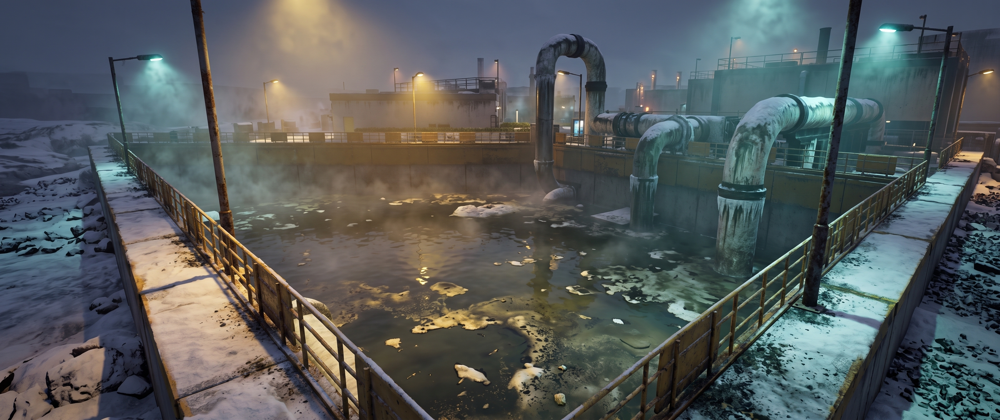
Amostra 01Área Industrial (Reservatório)
Lago Alice: Imediatamente a Leste do Complexo de
Extrações.
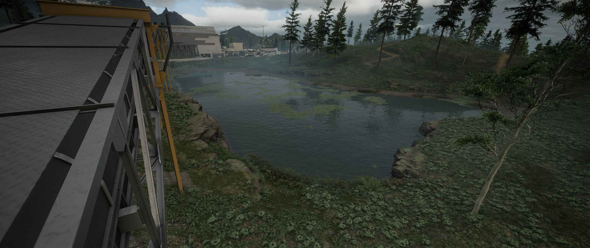
Amostra 02Margem do Lago Alice
Dove Stream: Imediatamente ao Sul da Mina do Pico
Bald.
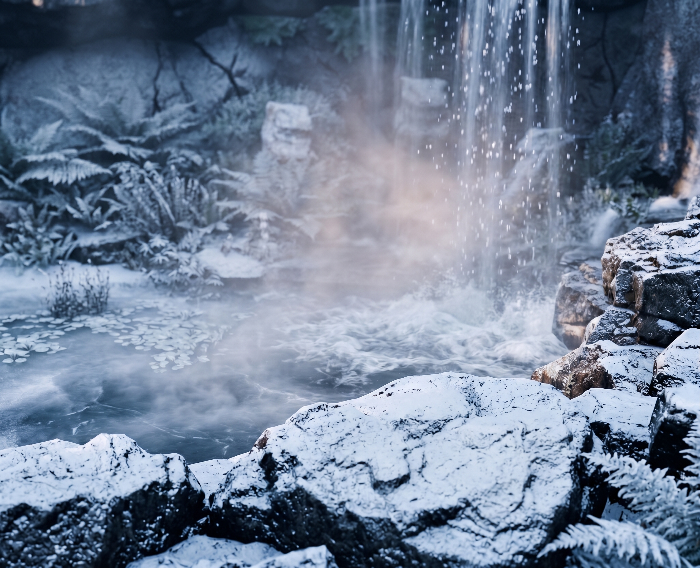
Amostra 03Corredeiras (Dove Stream)
SABOTAGEM LOGÍSTICA (COLD ORE): O esquadrão deve destruir a infraestrutura inimiga em
três áreas distintas:
Mina Vale Silent: Instalar C4 nas 5 esteiras
transportadoras e na antena de comunicação.
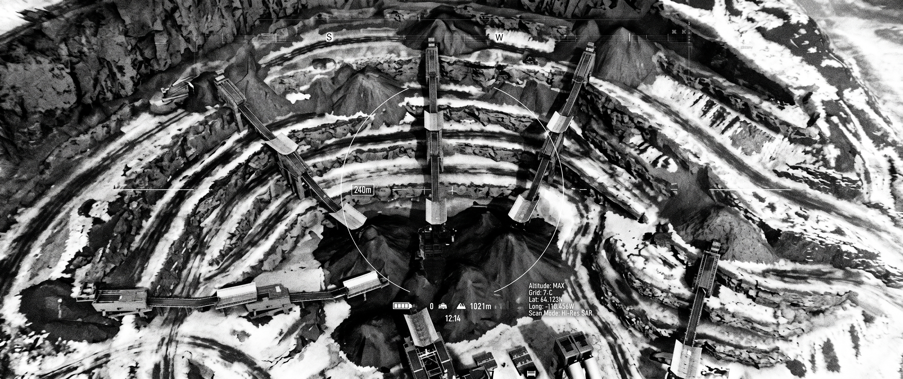
TopografiaMina Vale Silent
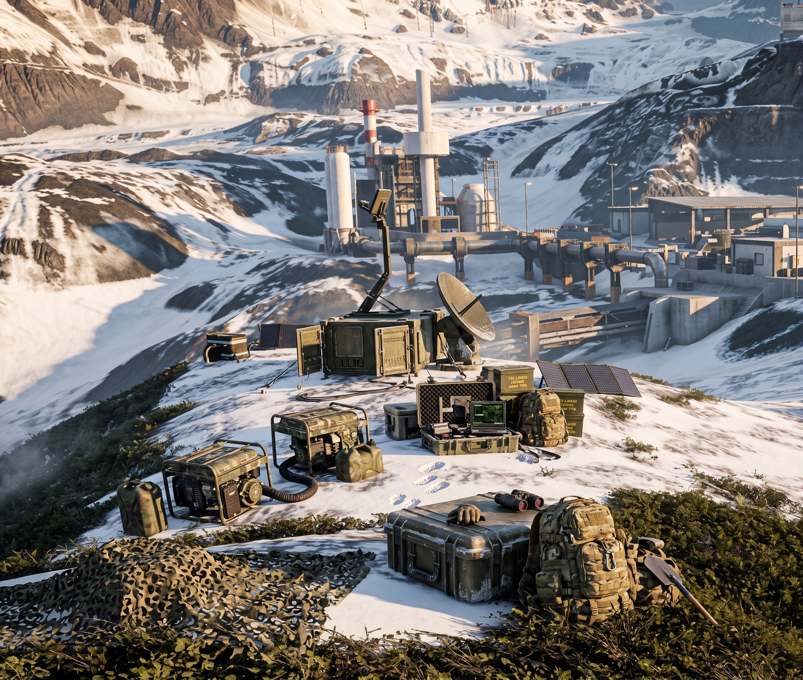
Alvo PrimárioAntena de Transmissão
Complexo de Extrações: Destruir os 2 motores primários e
interceptar o painel de controle.
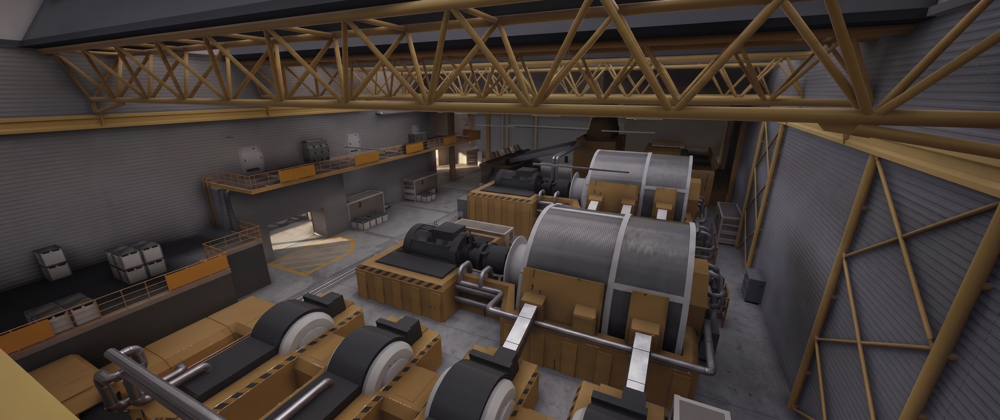
Vista IsométricaComplexo de Extrações
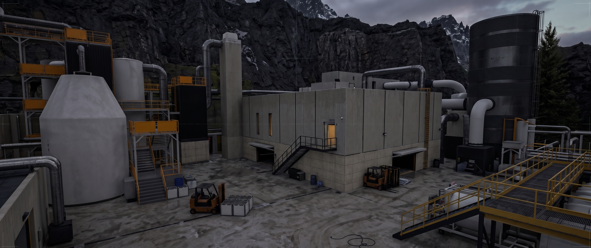
Anexo de ControleEdifício Secundário
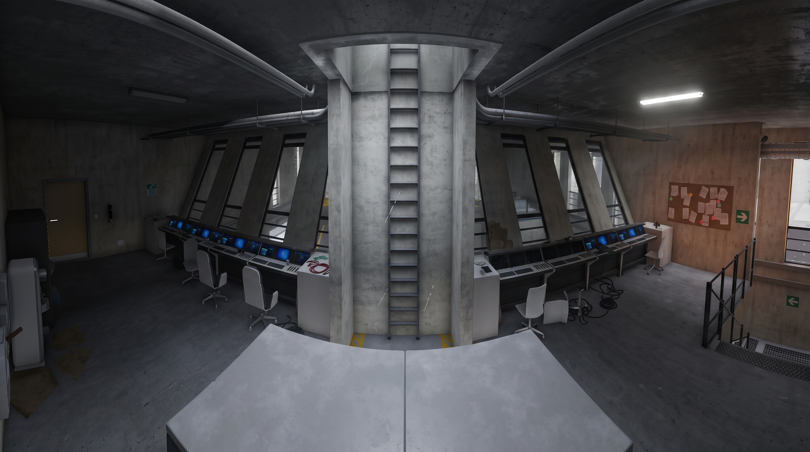
Alvo PrimárioPainel Eletrônico Mestre
Mina Pico Bald: Eliminar a infraestrutura destruindo 10
tambores inflamáveis e 2 silos de sílica.
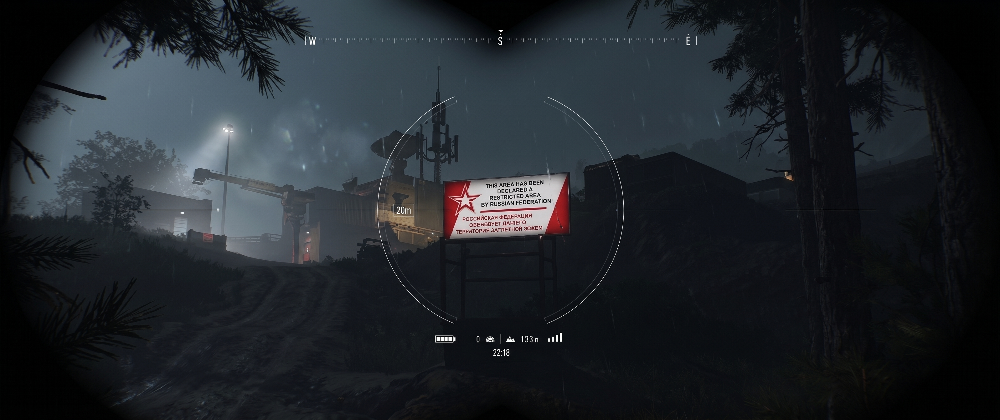
TopografiaMina Pico Bald
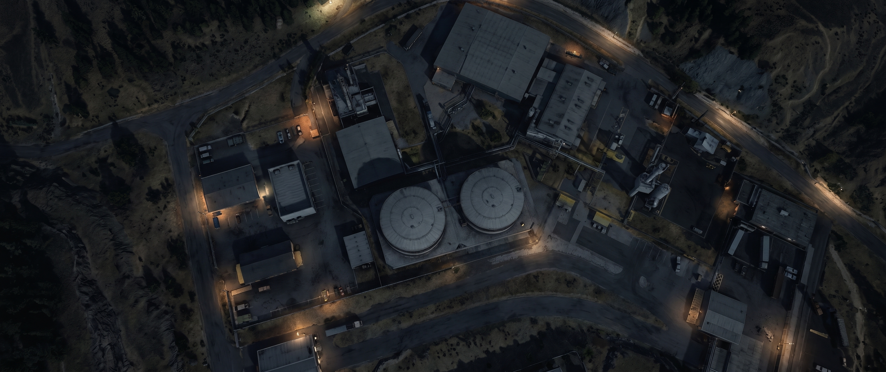
Alvo PrimárioSilos de Sílica
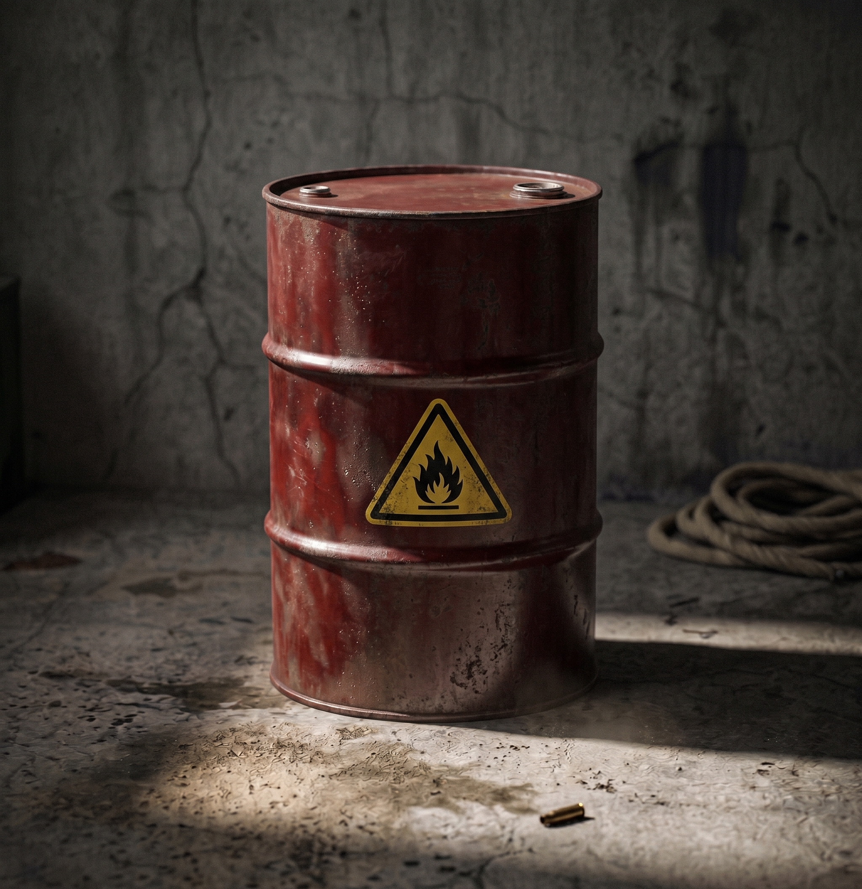
Alvo PrimárioTambores Inflamáveis
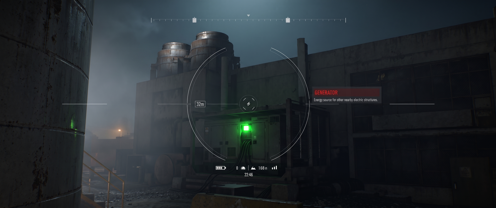
Alvo TáticoGerador Motorizado
// OBJETIVOS SECUNDÁRIOS (OPCIONAIS)
ESTAÇÃO W041 E LAGO FORTUNE: Para reestabelecer suporte de
drones, o esquadrão deve recuperar 4 peças sobressalentes (Bateria, Hélices, Sensores e Carcaça).
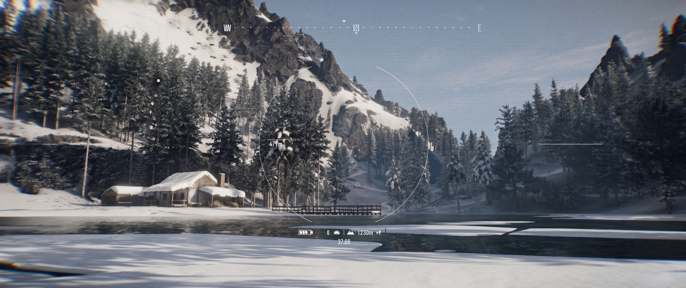
Peça 01Baterias do Drone
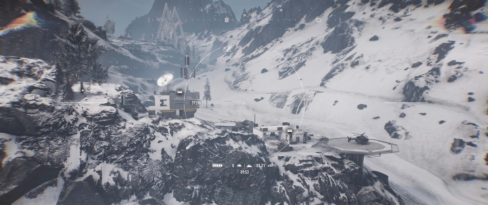
Peças 02 e 03Carcaça e Hélices
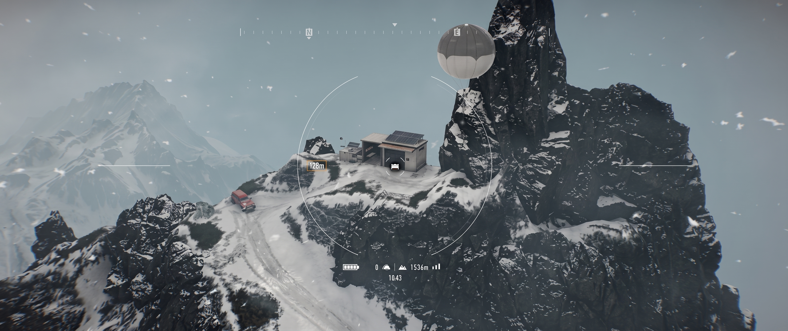
Peça 04Sensores Ópticos
Overlord: Diagramas do drone Murmur. [REGRA DO
GM] Montagem exclusiva em Bivaque (Local sugerido: Bivaque Vale Fugitives, entre a Mina Vale
Silent e o Complexo de Extrações Químicas).
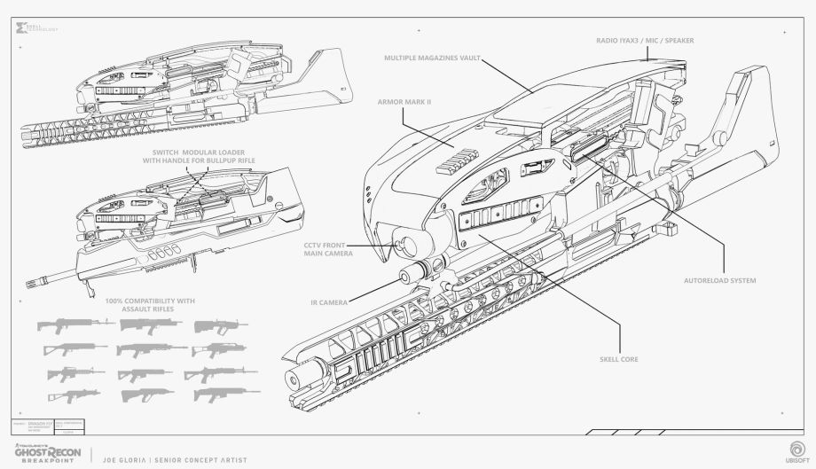
Documento TécnicoDiagrama de Montagem
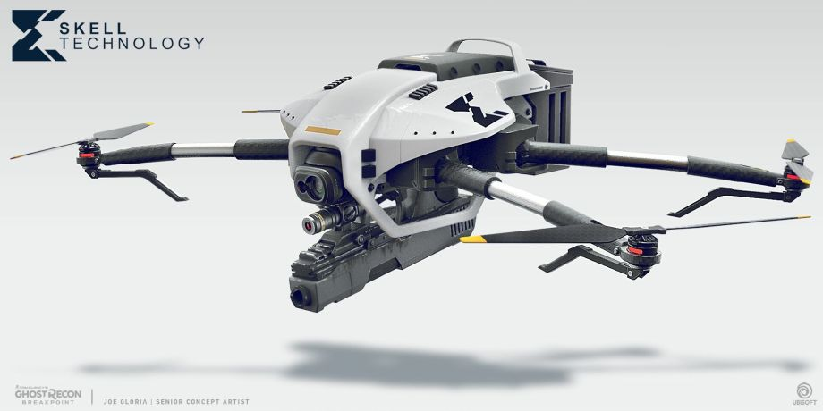
Projeção VisualDrone Montado
DIAGRAMA DE ARMAMENTO: Monitorar o esquadrão na localização e recuperação do diagrama
(blueprint) do fuzil de precisão de última geração na Mina Pico Bald.
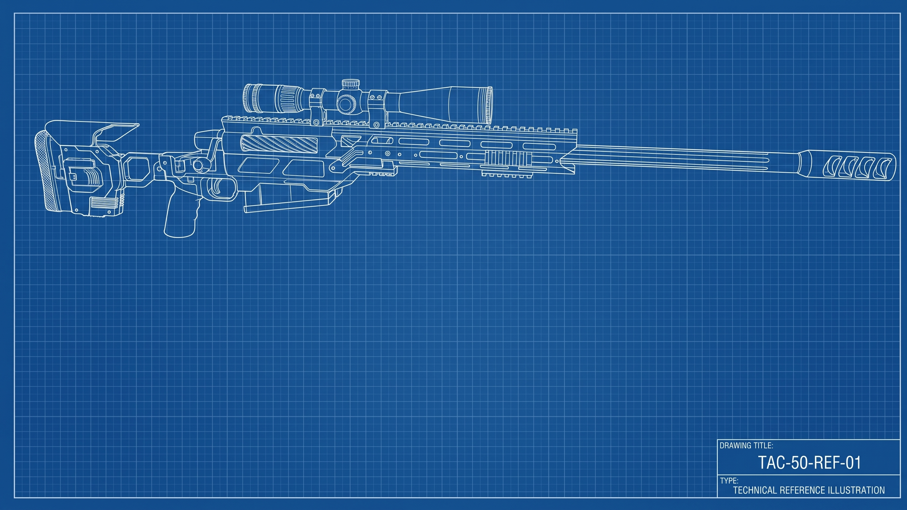
Material ConfidencialDiagrama de Sniper
// PROTOCOLO DE
EXTRAÇÃO (EXFIL)
A extração só será autorizada após a confirmação da destruição da
infraestrutura logística inimiga.
PONTO DE ENCONTRO (RV): Bivaque Serrania STAG
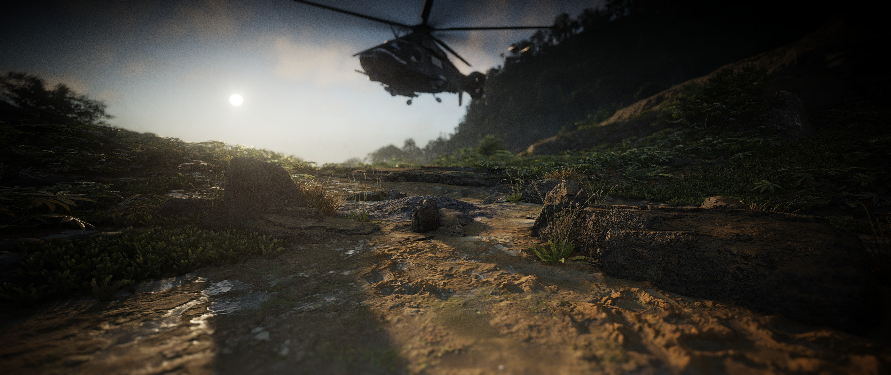
Zona de Pouso (LZ)Bivaque Serrania STAG
// GABARITOS DE
ARBITRAGEM (OVERLORD CHEAT SHEET)
Estes mapas contêm spoilers críticos. Use para monitorar o avanço
do Squad.
CONFIGURAÇÕES DE IMERSÃO (GHOST EXPERIENCE)
Ajustem os parâmetros do jogo de acordo com a tabela abaixo antes
de iniciar a operação.
Elemento
Diretriz Obrigatória
Interface (HUD) e Teclado
Desabilitar atalho de drone e visão térmica. HUD no modo Personalizado/Extremo: Retículo,
Energia, Arma e Técnica NUNCA. Marcadores NUNCA.
Ponto de Entrada
Bivaque Lago Fortune (Fortune Lake) entre 06:00 e 08:00 da manhã.
Transporte (Logística)
Viagem rápida e Helicópteros PROIBIDOS. Motocicletas conjuradas permitidas nos Bivaques. Carros
podem ser roubados se encontrados.